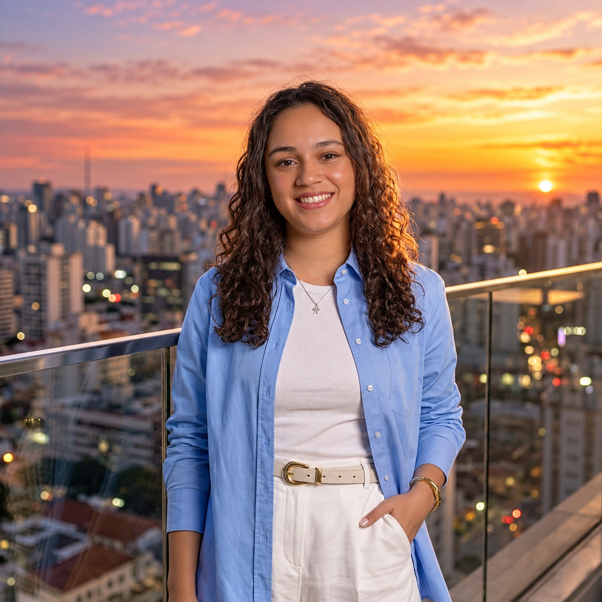

Trabalhos selecionados
Do problema, ao produto
Seis projetos onde discovery, interface e código se encontram. Clique em qualquer card para ver o resumo, as métricas e o case completo.
Seis projetos onde discovery, interface e código se encontram. Clique em qualquer card para ver o resumo, as métricas e o case completo.

Com 14 anos de prática em design, trago para o produto precisão visual e atenção ao detalhe que só vêm com tempo de execução real.
Atuo em Product Design e UX/UI, do discovery à interface navegável, com domínio de front-end para implementar e colaborar diretamente com times de desenvolvimento.
Cada decisão de interface parte de um entendimento claro do problema e do usuário.
Uso IA como acelerador no meu processo, para ganhar velocidade nas etapas certas e chegar mais rápido ao que importa. O julgamento de design fica sempre comigo.